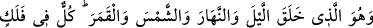
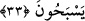
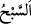

âhirette de nesh olunmaktan ve değiştirilmekten korunmuştur. Zâhirdeki kurallar (rüsûm)
ise ölüme kadar devam eder.
Akıllı kimseye gereken nefsini hevâsından alıkoymak, onun hidâyeti hakkında
düşünmek ve kendini irşâd edecek kişiyi seçerken akıl, nakil ve keşf yolunu en iyi bileni
tercih etmektir. Çünkü Mesnevî’de şöyle denilmiştir:
Tarîkat yolunda olan sâlik
Şerîatın hükmüne göre hareket eder
(Mürşid ararken) şerîatın ve hikmetin kıymetini bilmeyenden yüz çevirmelidir. Çünkü
böylelerinin tuttuğu yol, sonuçsuzdur ve sonuçsuz bir şeye tabî olanlar da akîm kalmaya
mahkûmdurlar.
Allah Teâlâ’dan bizi her halde mükâşefe ve müşâhede ehlinin yoluna tâbi olma
konusunda sebatta muvaffak kılmasını niyâz ederiz.
33. O, geceyi ve gündüzü, güneşi ve ayı yaratandır. Her biri bir yörüngede
yüzmektedirler.
Sâdece “O,” yeryüzünü gölgeleyen “geceyi ve” güneşin zıyâsıyla aydınlanan
“gündüzü,” gündüzleri aydınlatan bir yıldız olan “güneşi ve” geceleri aydınlatan “ayı
yaratandır.” Yâni bütün bunları yaratan, onları yokluktan varlık sahnesine çıkaran
sâdece Allah’tır, başkası değil. Kâmil kudret ve apaçık hikmet O’na âiddir.
Güneş ve ayın “Her biri” rasadın da şâhitlik ettiği üzere “bir yörüngede
yüzmektedir.” Yâni bunların her biri, suda yüzmek gibi birer yörüngede hareket
etmektedirler. “__WORD__ (yüzmek)” suda veya havada hızlıca gitmektir. Yörüngede
yıldızların gitmesi için de istiâre yoluyla kullanılmıştır. Nitekim el-Müfredât’ta böyle
denilmektedir. Buradan anlaşılan odur ki yıldızlar, yüzüğün üzerindeki taşların yüzükte
düzülmesi gibi felekte/yörüngede dizilmişlerdir.
Şerhu’t-Takvîm’de şöyle der: Yıldızların her biri bir felekte toplanmış, felekte sudaki
balık gibi değil, suya daldırılmış bir top gibi batmış vaziyettedir. Felekler, irade ile
hareket ederler. Yıldızlar ise irâdeleri dışında hareket ederler.
Bazıları âyetin zâhirine bakarak şöyle demiştir: “Felek, akmaktan alıkonmuş bir
dalgadır. Semâ ise öyle değildir. Güneş ve ay semada, balığın suda yüzdüğü gibi akıp
gider. Felek, âlemi kaplayan şeffaf bir cisimdir.
Râğıb şöyle demiştir: “Felek (yörünge), yıldızların aktığı yerin adıdır. Bu ismi